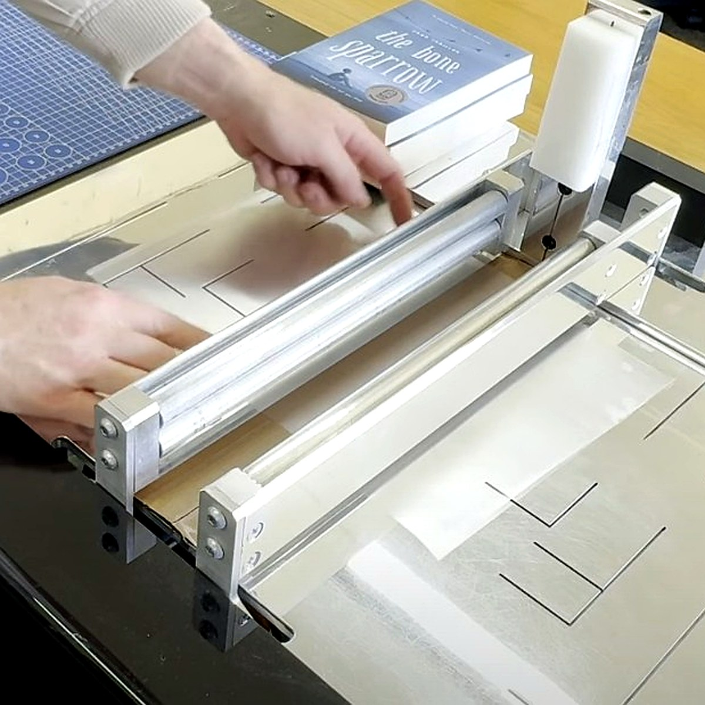
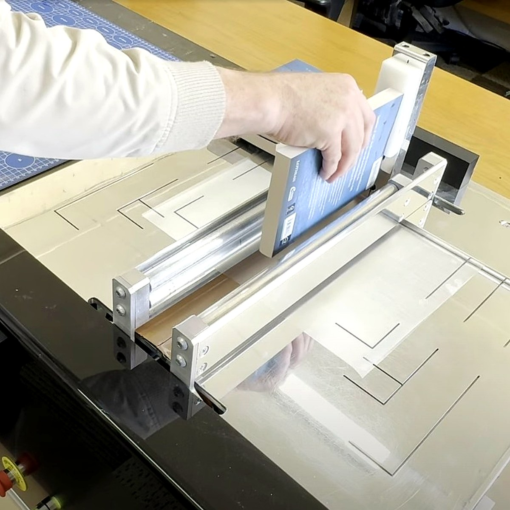
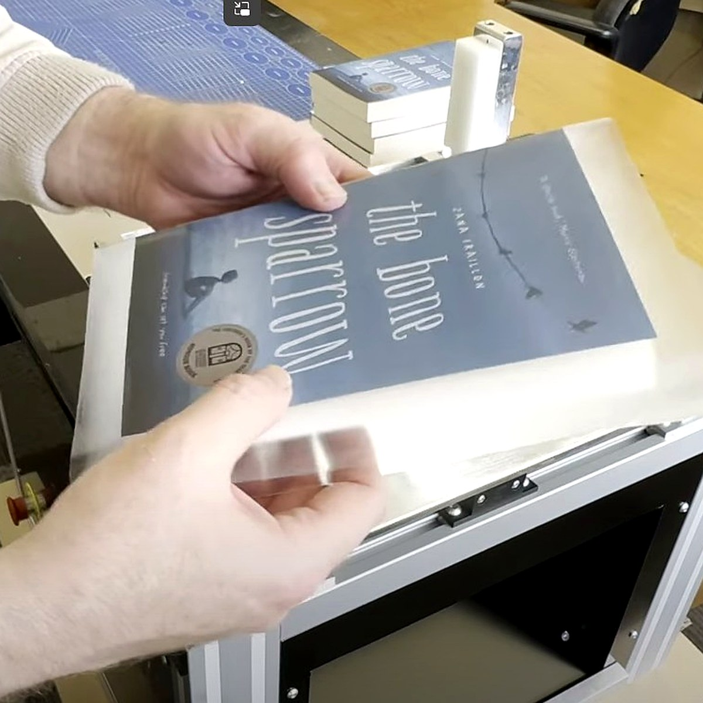

Fast & efficient
Reduce repetitive manual handling and keep batches moving.
Professional book protection
CoverPro is a robust book covering system built for high-volume processing teams who want a fast, high quality, repeatable finish.

Built for production
Designed to help staff cover books accurately and efficiently, CoverPro keeps the process controlled, repeatable and easier to teach.
CoverPro machines have reliably covered millions of books, saving companies years of staff hours.
These units have been in daily use - some for over 8 years - with little to no service requirements.
Reduce repetitive manual handling and keep batches moving.
Guided positioning helps produce a clean, professional result. Conforming sponge rollers mould to the shape of the book, ensuring even pressure and excellent adhesion over embossed covers and around corners.
Simple controls and a practical working surface. A new user can learn to operate the machine in minutes and immediately start processing books.
Engineered for long-term use in busy book processing environments. A three year warranty ensures your investment is protected.
See it in action
This video demonstrates the key features and benefits of the CoverPro book covering system.
How it works

1Place the sheet of adhesive covering material on the processing table. It is centered using the alignment guide on the table.

2Position the book against the vertical alignment guide, then slide it down onto the surface of the adhesive so the spine of the book makes firm contact.

3The CoverPro covers the book quickly and quietly, bubble and wrinkle free. The book exits the chute, ready for finishing.
Ideal for
CoverPro is suited to teams that cover many books and want a system that supports training, consistency and speed.
CoverPro is designed for organisations that prepare large volumes of books for distribution. It is the ideal solution for library suppliers, book processors, wholesalers and booksellers who provide books “shelf ready” to their customers.
Where hundreds or thousands of books need to be covered to a consistently high standard, CoverPro dramatically increases productivity while maintaining a professional finish. Its guided process reduces operator variability, allowing multiple staff members to produce the same consistent results with minimal training.
Whether processing a daily workflow or preparing large seasonal orders, CoverPro helps your team work faster, reduce labour costs and deliver books that are ready to go straight onto the shelf.
Specifications
Technical details covering power requirements, current ratings and the machine's physical size and weight.
| Region | Supply voltage | Current | Frequency |
|---|---|---|---|
| Australia / NZ | 230–240V AC | 10A | 50Hz |
| Europe / EU | 220–240V AC | 10A / 16A | 50Hz |
| USA / Canada | 110–120V AC | 15A | 60Hz |
| Specification | Value |
|---|---|
| Compatible Film Thickness | 60 to 175 micron |
| Weight | 50 kg (110 lb) |
| Dimensions (W × D × H) | 66 × 66 × 70 cm (26 × 26 × 27.6 in) |
Want to know more?
CoverPro is an investment in productivity, and every operation is different. Tell us about your workflow, the types of books you process and your production volume, and we'll help determine whether CoverPro is the right fit.
Whether you're looking for pricing, technical information or a live video demonstration, we're happy to answer your questions and show you the machine in action.